Feel/ 感受
对于上一次的问诊记录，查找翻阅非常困难。
通过实地观察、访谈与内部问卷，
绘制同理心地图，全方位理解用户。
工作台提供了好多功能，
实际使用我也就用那几个。
全科医师助理 · 原同理心地图反馈
对于上一次的问诊记录，查找翻阅非常困难。
新功能发布后，希望有视频
或动态语音解读介绍，
帮助助理提高问诊服务。
患者进来后，
权益标签太多了，
都不知道往哪里看。
诊疗阶段语音输入经常会有
重复输入和卡顿的现象。
把访谈与问卷中的目标、习惯和困难，整理为用户画像。
每日评估助理提交的拟诊、随访与报告信息，
审核开药建议并给出专业决策。
工作目标
工作中的阻力
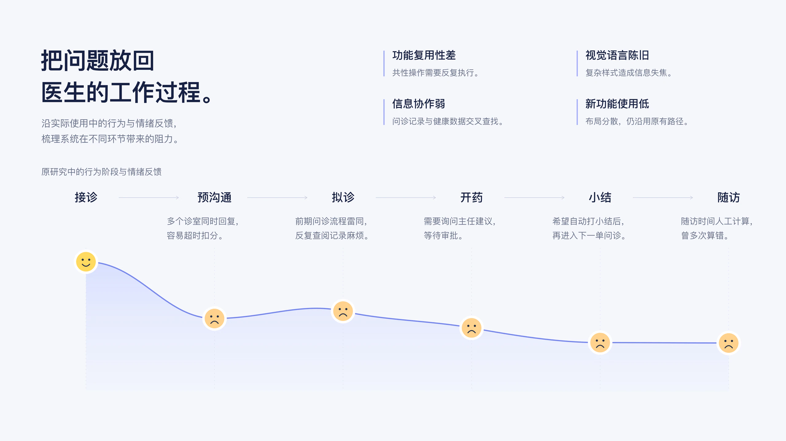
组件化、协同化、智能化，在统一的设计语言中组合升级。
将共性操作沉淀为组件，
建立可复用的设计标准。
以可视化健康档案，
集中组织患者相关信息。
把 AI 辅助融入 SOP，
支持实际的问诊过程。
BianQue 系统组件库：表格、表单、导航、模态框、图片上传。
先确定视觉标准，
再由设计团队输出对应关键稿件。
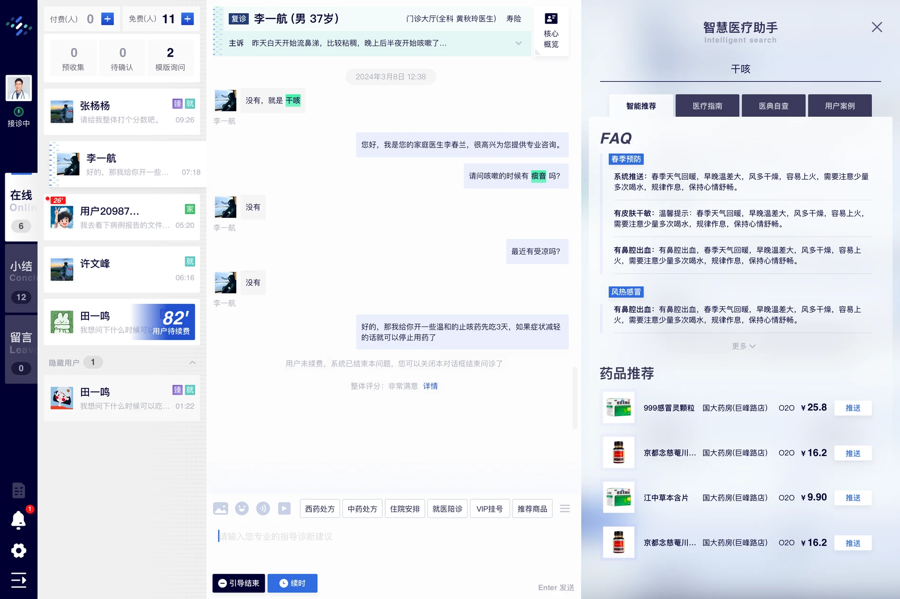
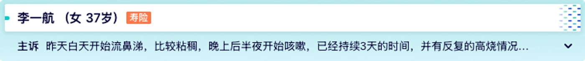
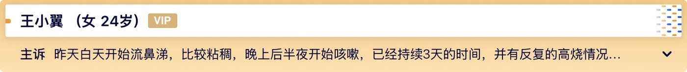
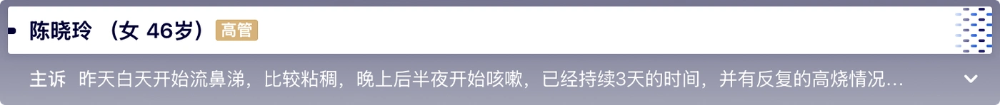
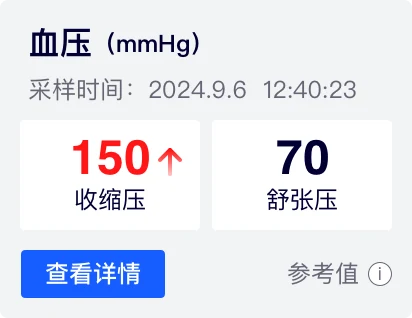
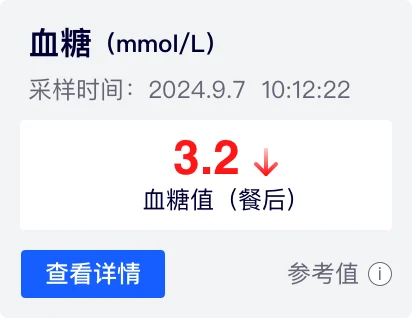
以人体档案关联病症、趋势与就医记录，
支持医生在工作台中查阅和标记。
以人体视图定位病症信息。
结合预警、指标趋势与就医记录。
在诊断过程中添加与编辑标记。
橙色：需关注器官（示意）
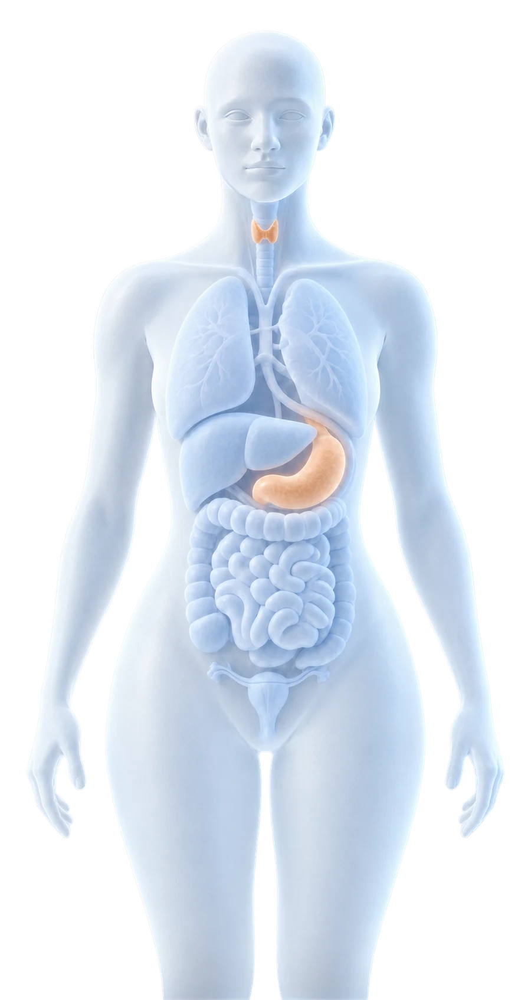
工作台内的健康档案面板
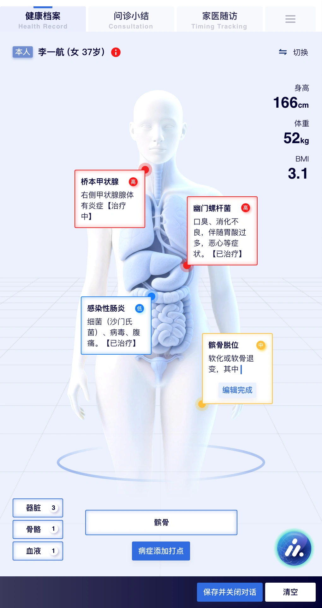
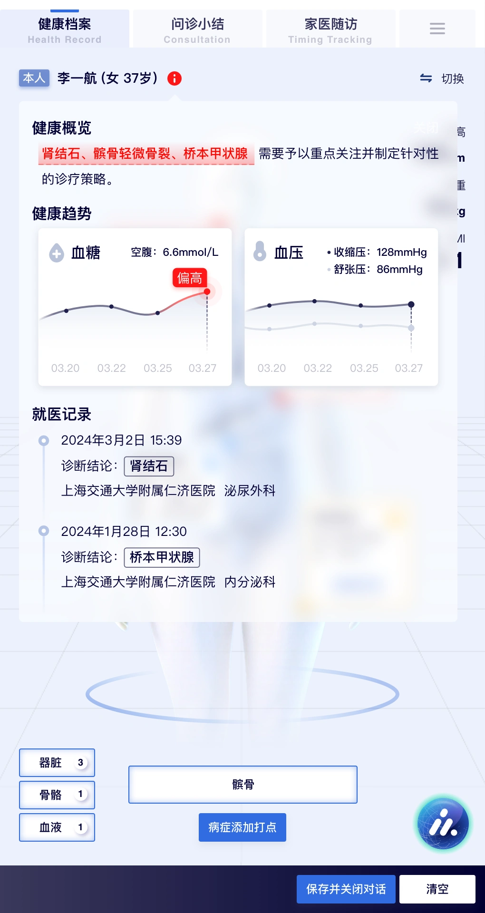
与医博通大模型、产品及研发团队
共同确认能力边界，
将智能辅助融入具体任务。
原方案：对话信息引用与 AI 填充
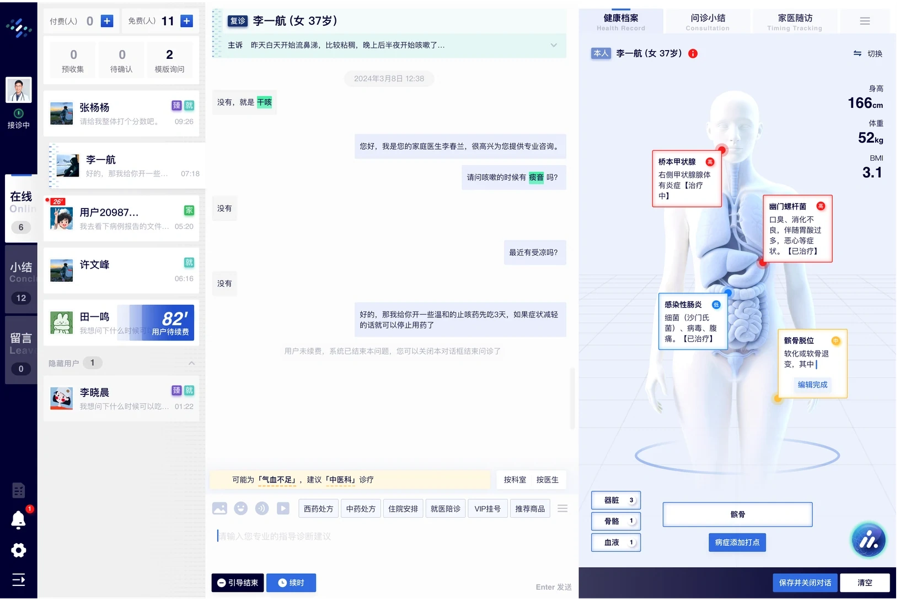
SOP 标准化体系
40+覆盖诊疗核心任务与通用业务组件，
建立统一的输入、识别与执行标准。
AI 交互形式｜伴随式随当前任务在右侧展开，在关键节点提示、补全与校验，由医生确认后继续。
减少重复操作，让医生更快完成高频任务。
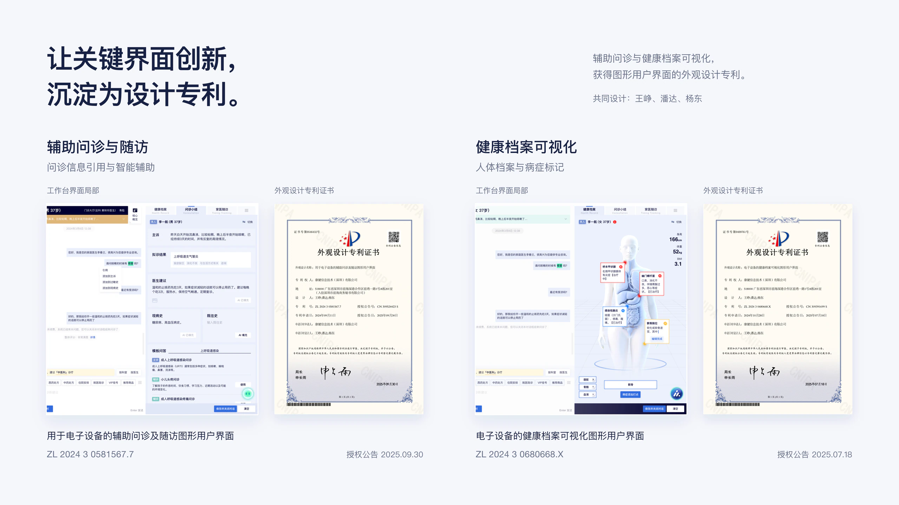
用 GOMS–KLM 拆解组件交互中的操作、
思考与响应；同步观察智能辅助的使用表现。
将交互过程拆成可比较的元行为，检查动作、认知与系统等待的组合成本。
数值按原作品集评估记录呈现。
GOMS–KLM 为模型估算，不表述为实测提效。
以“平安健康智慧医生工作台”对外参评，
项目在平安好医生战略发布会对外分享，
并获得两项 2024 设计奖。
参赛案例
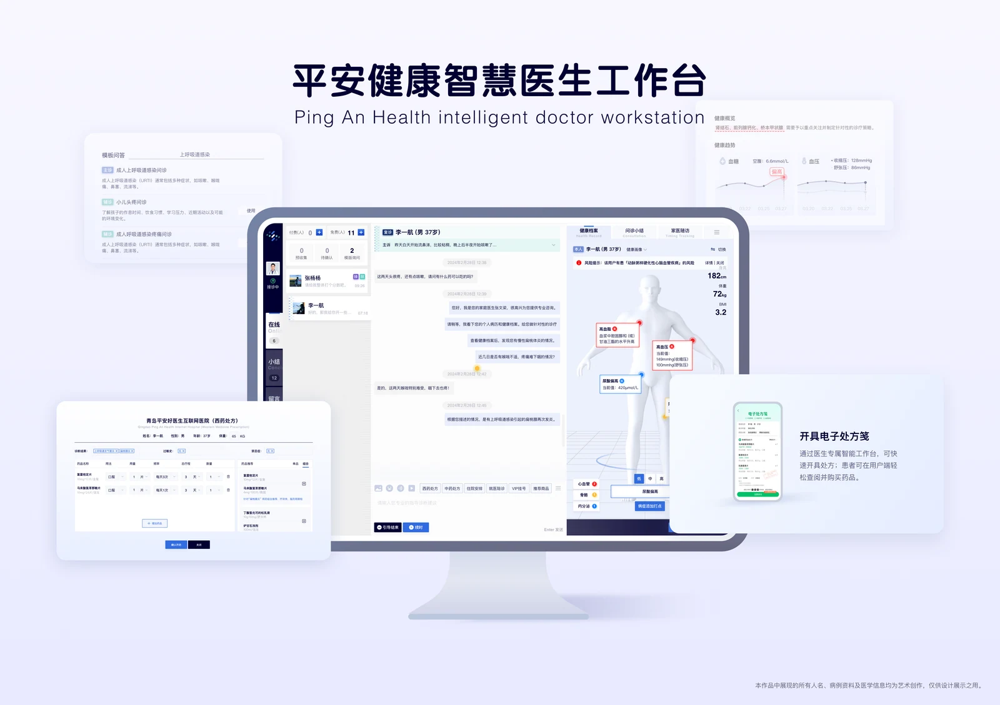
IAI 全球设计奖
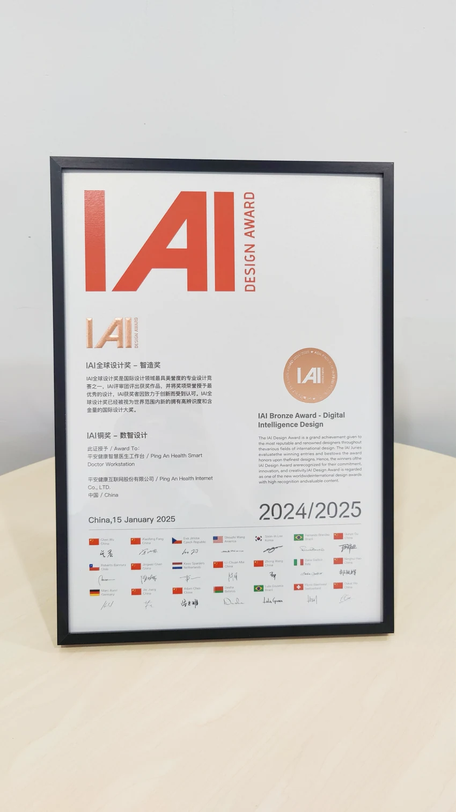
KTK 靳埭强设计奖
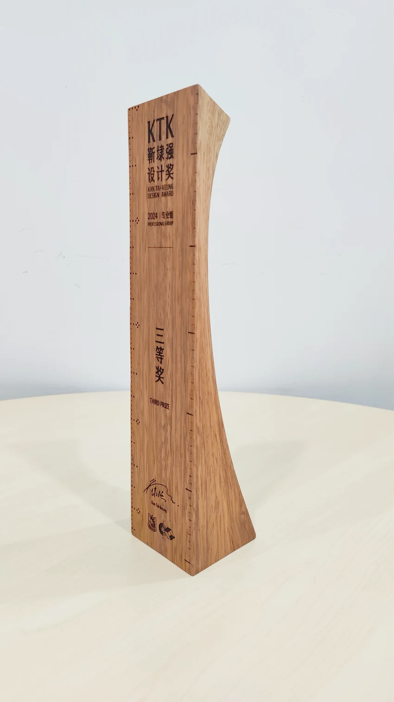
BianQue 智能医生工作站
项目从医生访谈与实际工作场景出发，
形成新的工作台结构、视觉标准与智能辅助方案。